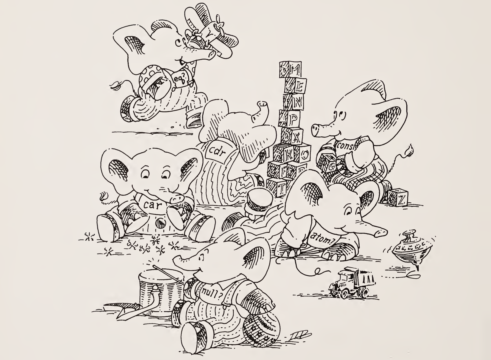
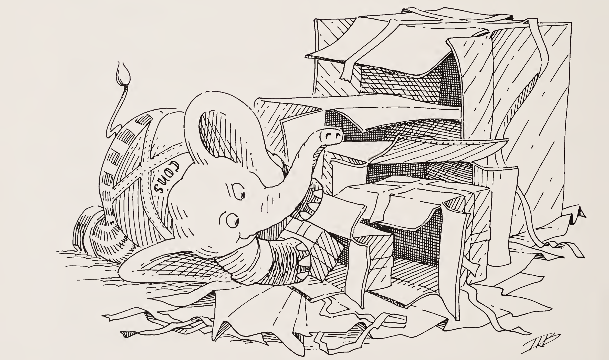
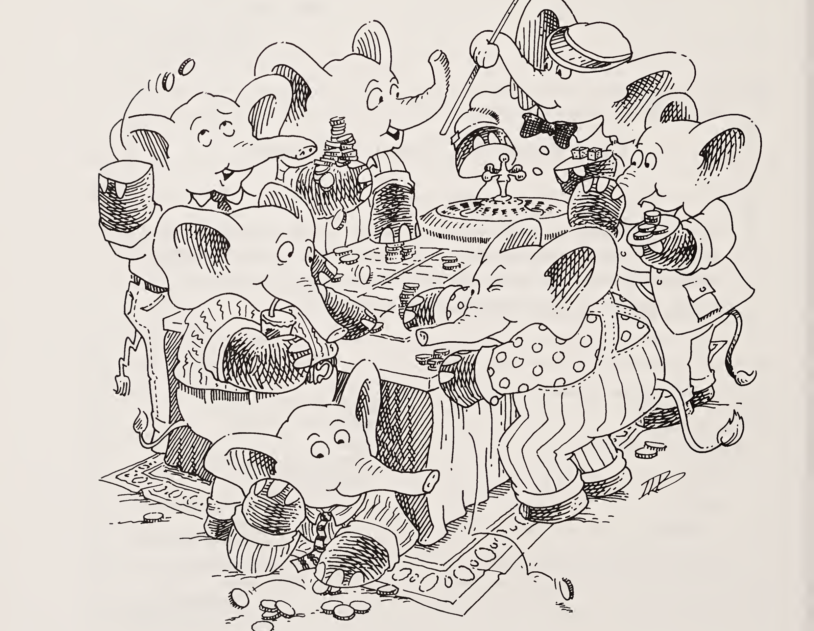
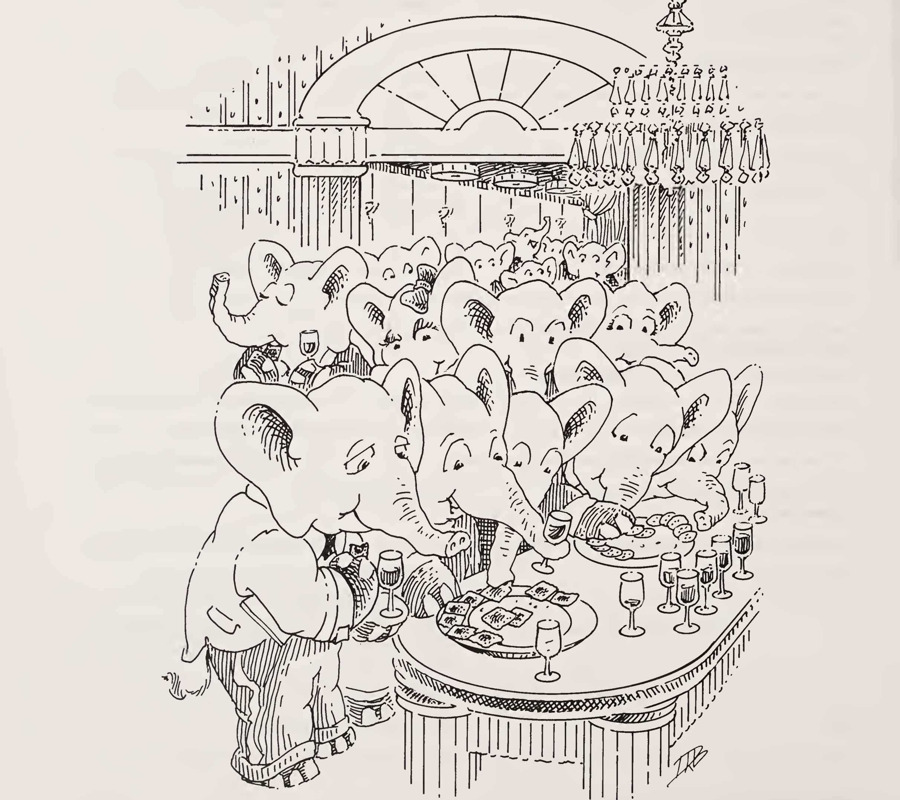

원자들의 리스트 lat을 재귀할 때는 그것에 대해 두 가지 질문을 한다: (null? lat)과 else.
수 n을 재귀할 때는 그것에 대해 두 가지 질문을 한다: (zero? n)과 else.
S-표현식들의 리스트 l을 재귀할 때는 그것에 대해 세 가지 질문을 한다: (null? l), (atom? (car l)), else.
둘째 계명
리스트를 만들 때는 cons를 사용한다.
셋째 계명
리스트를 만들 때는 첫 번째 전형적인 원소를 서술한 다음, 그것을 자연 재귀 위에 cons한다.
넷째 계명
재귀할 때는 적어도 하나의 인자를 바꾼다. 원자들의 리스트 lat을 재귀할 때는 (cdr lat)을 쓴다. 수 n을 재귀할 때는 (subl n)을 쓴다. 그리고 S-표현식들의 리스트 l을 재귀할 때는, (null? l)도 (atom? (car l))도 참이 아니라면 (car l)과 (cdr l)을 쓴다.
그 인자는 종료에 더 가까워지도록 바뀌어야 한다. 바뀌는 인자는 종료 조건에서 검사되어야 한다. cdr을 쓸 때는 null?로 종료를 검사하고, subl을 쓸 때는 zero?로 종료를 검사한다.
다섯째 계명
+로 값을 만들 때는 종료 줄의 값으로 언제나 0을 쓴다. 0을 더해도 덧셈의 값은 바뀌지 않기 때문이다.
×로 값을 만들 때는 종료 줄의 값으로 언제나 1을 쓴다. 1을 곱해도 곱셈의 값은 바뀌지 않기 때문이다.
cons로 값을 만들 때는 종료 줄의 값으로 언제나 ()를 고려한다.
여섯째 계명
함수가 올바르게 동작한 뒤에만 단순화한다.
일곱째 계명
같은 성질을 지닌 부분들로 재귀한다.
리스트의 하위 리스트들로.
산술식의 하위 표현식들로.
여덟째 계명
표현으로부터 추상화하기 위해 도움 함수를 사용한다.
아홉째 계명
공통된 패턴을 새로운 함수로 추상화한다.
열째 계명
한 번에 둘 이상의 값을 모으는 함수를 만든다.
1장 · 장난감 (Toys)

장난감
질문
답변
이것은 원자인가? atom
네, atom은 문자 a로 시작하는 문자열이기 때문입니다.
이것은 원자인가? turkey
네, turkey는 글자로 시작하는 문자열이기 때문입니다.
이것은 원자인가? 1492
네, 1492는 숫자들로 이루어진 문자열이기 때문입니다.
이것은 원자인가? u
네, u는 글자인 한 문자로 이루어진 문자열이기 때문입니다.
이것은 원자인가? *abc$
네, *abc$는 왼쪽 괄호 (나 오른쪽 괄호 )가 아닌 글자 또는 특수 문자로 시작하는 문자열이기 때문입니다.
이것은 리스트인가? (atom)
네, (atom)은 괄호로 둘러싸인 원자이기 때문입니다.
이것은 리스트인가? (atom turkey or)
네, 괄호로 둘러싸인 원자들의 모음이기 때문입니다.
참고.(quote atom) 또는 'atom으로도 같은 뜻이 됩니다. L:과 S: 표기는 서문에서 설명합니다.
질문
답변
이것은 리스트인가? (atom turkey) or
아니요. 이것은 실제로는 괄호로 둘러싸이지 않은 두 개의 S-표현식입니다. 첫 번째는 두 원자를 담은 리스트이고, 두 번째는 원자입니다.
이것은 리스트인가? ((atom turkey) or)
네, 두 S-표현식이 이제 괄호로 둘러싸여 있기 때문입니다.
이것은 S-표현식인가? xyz
네, 모든 원자는 S-표현식이기 때문입니다.
이것은 S-표현식인가? (x y z)
네, 리스트이기 때문입니다.
이것은 S-표현식인가? ((x y) z)
네, 모든 리스트는 S-표현식이기 때문입니다.
이것은 리스트인가? (how are you doing so far)
네, 괄호로 둘러싸인 S-표현식들의 모음이기 때문입니다.
리스트 (how are you doing so far)에는 S-표현식이 몇 개 있고, 그것들은 무엇인가?
여섯 개입니다. how, are, you, doing, so, far입니다.
이것은 리스트인가? (((how) are) ((you) (doing so)) far)
네, 괄호로 둘러싸인 S-표현식들의 모음이기 때문입니다.
리스트 (((how) are) ((you) (doing so)) far)에는 S-표현식이 몇 개 있고, 그것들은 무엇인가?
세 개입니다. ((how) are), ((you) (doing so)), far입니다.
질문
답변
이것은 리스트인가? ()
네, 괄호로 둘러싸인 S-표현식이 하나도 없기 때문입니다. 이 특별한 S-표현식을 널(null) 리스트 또는 빈 리스트라고 부릅니다.
이것은 원자인가? ()
아니요, ()는 그저 리스트이기 때문입니다.
이것은 리스트인가? (0 0 0 0)
네, 괄호로 둘러싸인 S-표현식들의 모음이기 때문입니다.
l의 car는 무엇인가? l은 (a b c)
a입니다. a가 이 리스트의 첫 번째 원자이기 때문입니다.
l의 car는 무엇인가? l은 ((a b c) x y z)
(a b c)입니다. (a b c)가 이 비어 있지 않은 리스트의 첫 번째 S-표현식이기 때문입니다.
(atom? (car l))은 리스트 l의 첫 S-표현식이 원자인지 묻습니다. (car l)이 원자라면 l의 나머지도 원자로만 이루어졌는지 알고 싶습니다. (car l)이 원자가 아니면 다음 질문을 던집니다. 여기서는 (car l)이 원자이므로, 함수의 값은 (lat? (cdr l))의 값입니다.
(lat? (cdr l))의 뜻은?
(lat? (cdr l))은 새 인자로 함수를 다시 부름으로써 리스트 l의 나머지가 원자로만 이루어졌는지 알아봅니다.
이제 lat?의 인자 l은 무엇인가요?
이제 인자 l은 (cdr l)이고, 그것은 (and eggs)입니다.
다음 질문은?
(null? l)입니다.
((null? l) #t) 줄의 뜻은? l은 이제 (and eggs)
(null? l)은 인자 l이 널 리스트인지 묻습니다. 그렇다면 응용의 값은 #t입니다. 그렇지 않다면 다음 질문을 던집니다. 여기서 l은 널 리스트가 아니므로 다음 질문을 던집니다.
우리 말로 하면 이렇습니다. “lat?은 리스트의 각 S-표현식을 차례로 보면서, S-표현식이 다 떨어질 때까지 그것이 원자인지 묻습니다. 리스트를 만나지 않고 끝까지 가면 값은 #t입니다. 리스트를 만나면 값은 #f, 곧 거짓입니다.” “거짓”이라는 값에 어떻게 이르는지 보려면 다음 몇 질문을 보세요.
(lat? l)의 값은? l은 이제 (bacon (and eggs))
#f입니다. 리스트 l이 리스트인 S-표현식을 담고 있기 때문입니다.
첫 질문은?
(null? l)입니다.
((null? l) #t) 줄의 뜻은? l은 (bacon (and eggs))
(null? l)은 l이 널 리스트인지 묻습니다. 널이라면 값은 #t입니다. l이 널이 아니라면 다음 질문으로 넘어갑니다. 여기서는 널이 아니므로 다음 질문을 던집니다.
함수 정의의 처음에 나오는 (cond ..., (lambda ..., (define ...의 닫는 괄호, 곧 서로 짝이 맞는 괄호입니다.
(lat? l)에서 값 #f를 어떻게 정했는지 설명할 수 있나요? l은 (bacon (and eggs))
한 가지로 말하면 이렇습니다. “(lat? l)은 인자의 각 항목을 보면서 그것이 원자인지 확인합니다. 리스트를 만나기 전에 항목이 다 떨어지면 (lat? l)의 값은 #t입니다. (bacon (and eggs)) 예에서처럼 리스트를 만나면 (lat? l)의 값은 #f입니다.”
참인가 거짓인가? (or (null? l1) (atom? l2)) l1은 (), l2는 (d e f g)
참입니다. l1이 ()일 때 (null? l1)이 참이기 때문입니다.
참인가 거짓인가? (or (null? l1) (null? l2)) l1은 (a b c), l2는 ()
참입니다. l2가 ()일 때 (null? l2)가 참이기 때문입니다.
참인가 거짓인가? (or (null? l1) (null? l2)) l1은 (a b c), l2는 (atom)
거짓입니다. l1이 (a b c)이고 l2가 (atom)일 때 (null? l1)도 (null? l2)도 참이 아니기 때문입니다.
(or ...)는 무엇을 하나요?
(or ...)는 두 질문을 한 번에 하나씩 던집니다. 첫 번째 질문이 참이면 거기서 멈추고 참이라고 답합니다. 그렇지 않으면 두 번째 질문을 던지고, 두 번째 질문이 답하는 대로 답합니다.
다음은 member?의 정의입니다.
(define member? (lambda (a lat) (cond ((null? lat) #f) (else (or (eq? (car lat) a) (member? a (cdr lat)))))))
질문
답변
a가 lat의 원소라는 것이 참인가 거짓인가? a는 tea, lat은 (coffee tea or milk)
참입니다. lat인 (coffee tea or milk)의 원자 가운데 하나가 원자 a, 곧 tea와 같기 때문입니다.
(member? a lat)은 참인가 거짓인가? a는 poached, lat은 (fried eggs and scrambled eggs)
거짓입니다. a가 lat의 원자 가운데 하나가 아니기 때문입니다.
(member? a lat)의 값은? a는 meat, lat은 (mashed potatoes and meat gravy)
#t입니다. 원자 meat이 lat인 (mashed potatoes and meat gravy)의 원자 가운데 하나이기 때문입니다.
위 응용의 값 #t를 어떻게 알 수 있나요?
(member? a lat)에 대한 질문들에 답하면서 값이 정해집니다. 힌트: member? 함수의 정의를 적어 두고, 다음 질문 묶음을 푸는 동안 그것을 참고하세요.
(null? lat)은 lat이 널 리스트인지 묻습니다. 그렇다면 값은 #f입니다. 원자 meat이 lat에서 발견되지 않았기 때문입니다. 그렇지 않다면 다음 질문을 던집니다. 여기서는 널이 아니므로 다음 질문을 던집니다.
다음 질문은?
else입니다.
else가 다음 질문인 이유는?
더 이상 질문을 던질 필요가 없기 때문입니다.
else도 정말 질문인가요?
네, else는 값이 언제나 참인 질문입니다.
(else (or (eq? (car lat) a) (member? a (cdr lat)))) 줄의 뜻은?
이제 lat이 널이 아니라는 것을 알았으니, lat의 car가 a와 같은 원자인지, 아니면 a가 lat의 나머지 어딘가에 있는지 알아내야 합니다. (or (eq? (car lat) a) (member? a (cdr lat)))가 그 일을 합니다.
참인가 거짓인가? (or (eq? (car lat) a) (member? a (cdr lat))) a는 meat, lat은 (mashed potatoes and meat gravy)
각 질문을 차례로 보면서 알아내겠습니다.
질문
답변
(eq? (car lat) a)는 참인가 거짓인가? a는 meat, lat은 (mashed potatoes and meat gravy)
거짓입니다. meat이 (mashed potatoes and meat gravy)의 car인 mashed와 eq?하지 않기 때문입니다.
(or ...)의 두 번째 질문은?
(member? a (cdr lat))입니다. 이것은 인자 lat을 (cdr lat)으로 바꾸어 함수를 부르는 것입니다.
이제 member?의 인자들은 무엇인가요?
a는 meat이고, lat은 이제 (cdr lat), 구체적으로는 (potatoes and meat gravy)입니다.
다음 질문은?
(null? lat)입니다. 첫째 계명을 기억하세요.
(null? lat)은 참인가 거짓인가? lat은 (potatoes and meat gravy)
#f, 곧 거짓입니다.
이제 무엇을 하나요?
다음 질문을 던집니다.
다음 질문은?
else입니다.
(or (eq? (car lat) a) (member? a (cdr lat)))의 뜻은?
(or ...)는 함수를 다시 부름으로써 a가 lat의 car와 eq?한지, 또는 a가 lat의 cdr의 원소인지 알아냅니다.
a는 lat의 car와 eq?한가요?
아니요, a는 meat이고 lat의 car는 potatoes이기 때문입니다.
질문
답변
그래서 다음에는 무엇을 하나요?
(member? a (cdr lat))을 던집니다.
이제 member?의 인자들은 무엇인가요?
a는 meat이고, lat은 (and meat gravy)입니다.
다음 질문은?
(null? lat)입니다.
이제 무엇을 하나요?
(null? lat)이 거짓이므로 다음 질문을 던집니다.
다음 질문은?
else입니다.
(or (eq? (car lat) a) (member? a (cdr lat)))의 값은?
(member? a (cdr lat))의 값입니다.
왜인가요?
(eq? (car lat) a)가 거짓이기 때문입니다.
이제 무엇을 하나요?
재귀합니다. 새 인자로 함수를 다시 부릅니다.
새 인자들은 무엇인가요?
a는 meat이고, lat은 (meat gravy)입니다.
다음 질문은?
(null? lat)입니다.
이제 무엇을 하나요?
(null? lat)이 거짓이므로 다음 질문을 던집니다.
다음 질문은?
else입니다.
질문
답변
(or (eq? (car lat) a) (member? a (cdr lat)))의 값은?
#t입니다. (car lat)인 meat와 a인 meat가 같은 원자이기 때문입니다. 그래서 (or ...)는 #t로 답합니다.
(member? a lat)의 값은? a는 meat, lat은 (meat gravy)
#t입니다. meat이 (meat gravy)의 원소임을 찾았기 때문입니다.
(member? a lat)의 값은? a는 meat, lat은 (and meat gravy)
#t입니다. meat이 (and meat gravy)라는 lat의 원소이기도 하기 때문입니다.
(member? a lat)의 값은? a는 meat, lat은 (potatoes and meat gravy)
#t입니다. meat이 (potatoes and meat gravy)라는 lat의 원소이기도 하기 때문입니다.
(member? a lat)의 값은? a는 meat, lat은 (mashed potatoes and meat gravy)
#t입니다. meat이 (mashed potatoes and meat gravy)라는 lat의 원소이기도 하기 때문입니다. 물론 이것이 우리의 원래 lat입니다.
확실히 하기 위해 다시 한 번 훑어봅시다. (member? a lat)의 값은? a는 meat, lat은 (mashed potatoes and meat gravy)
#t입니다.
(null? lat)의 값은?
아니요.
참고.member? 함수의 정의와 그 인자들을 적어 두고, 다음 질문 묶음을 지나가면서 그것들을 참고하세요.
이제 member?의 계산 과정을 함수의 줄 단위로 따라가 봅시다. 왼쪽은 살펴보는 줄, 오른쪽은 그 줄에서 일어나는 일입니다.
질문
답변
else
네.
(or (eq? (car lat) a) (member? a (cdr lat)))
아마도요.
(eq? (car lat) a)
아니요. 다음 질문을 던집니다.
다음은?
a와 (cdr lat)으로 재귀합니다. a는 meat이고 (cdr lat)은 (potatoes and meat gravy)입니다.
(null? lat)
아니요. 다음 줄로 넘어갑니다.
else
네. 하지만 (eq? (car lat) a)가 거짓입니다. a와 (cdr lat)으로 재귀합니다. a는 meat이고 (cdr lat)은 (and meat gravy)입니다.
(null? lat)
아니요. 다음 줄로 넘어갑니다.
else
네. 하지만 (eq? (car lat) a)가 거짓입니다. a와 (cdr lat)으로 재귀합니다. a는 meat이고 (cdr lat)은 (meat gravy)입니다.
(null? lat)
아니요. 다음 줄로 넘어갑니다.
(eq? (car lat) a)
네, 값은 #t입니다.
질문
답변
(member? a lat)의 값은? a는 meat, lat은 (meat gravy)
#t입니다.
(member? a lat)의 값은? a는 meat, lat은 (and meat gravy)
#t입니다.
(member? a lat)의 값은? a는 meat, lat은 (potatoes and meat gravy)
#t입니다.
(member? a lat)의 값은? a는 meat, lat은 (mashed potatoes and meat gravy)
#t입니다.
(member? a lat)의 값은? a는 liver, lat은 (bagels and lox)
#f입니다.
왜 #f인지 풀어 봅시다. member?가 처음 던지는 질문은 무엇인가요?
(null? lat)입니다.
(null? lat)의 값은? lat은 (bagels and lox)
아니요. 다음 줄로 넘어갑니다.
질문
답변
else
네. 하지만 (eq? (car lat) a)가 거짓입니다. a와 (cdr lat)으로 재귀합니다. a는 liver이고 (cdr lat)은 (and lox)입니다.
(null? lat)
아니요. 다음 줄로 넘어갑니다.
else
네. 하지만 (eq? (car lat) a)가 거짓입니다. a와 (cdr lat)으로 재귀합니다. a는 liver이고 (cdr lat)은 (lox)입니다.
(null? lat)
아니요. 다음 줄로 넘어갑니다.
else
네. 하지만 (eq? (car lat) a)는 여전히 거짓입니다. a와 (cdr lat)으로 재귀합니다. a는 liver이고 (cdr lat)은 ()입니다.
(null? lat)
네.
(member? a lat)의 값은? a는 liver, lat은 ()
#f입니다.
(or (eq? (car lat) a) (member? a (cdr lat)))의 값은? a는 liver, lat은 (lox)
#f입니다.
질문
답변
(member? a lat)의 값은? a는 liver, lat은 (lox)
#f입니다.
(or (eq? (car lat) a) (member? a (cdr lat)))의 값은? a는 liver, lat은 (and lox)
#f입니다.
(member? a lat)의 값은? a는 liver, lat은 (and lox)
#f입니다.
(or (eq? (car lat) a) (member? a (cdr lat)))의 값은? a는 liver, lat은 (bagels and lox)
#f입니다.
(member? a lat)의 값은? a는 liver, lat은 (bagels and lox)
#f입니다.
이 모든 것을 믿겠습니까? 그렇다면 이제 쉬어도 좋습니다!
이 자리는 낙서를 위해 비워 둡니다!
3장 · 위대한 cons (Cons the Magnificent)

위대한 cons
질문
답변
(rember a lat)은 무엇인가? a는 mint, lat은 (lamb chops and mint jelly)
(lamb chops and jelly)입니다.
(rember a lat)은 무엇인가? a는 mint, lat은 (lamb chops and mint flavored mint jelly)
(lamb chops and flavored mint jelly)입니다.
(rember a lat)은 무엇인가? a는 toast, lat은 (bacon lettuce and tomato)
(bacon lettuce and tomato)입니다.
(rember a lat)은 무엇인가? a는 cup, lat은 (coffee cup tea cup and hick cup)
(coffee tea cup and hick cup)입니다.
(rember a lat)은 무엇을 하는가?
원자 하나와 lat 하나를 인자로 받아, 옛 lat에서 그 원자가 처음 나타난 것 하나만 제거한 새 lat을 만듭니다.
이 일을 하려면 어떤 단계를 밟아야 하는가?
먼저 (null? lat)을 검사합니다. 첫째 계명입니다.
그러면 (null? lat)이 참이면?
()를 반환합니다.
(null? lat)이 참이 아니면 무엇을 알 수 있는가?
lat에 적어도 원자가 하나는 있다는 것을 압니다.
lat에 대해 물어볼 다른 질문이 있는가?
없습니다. lat은 비어 있거나, 적어도 원자를 하나 담고 있습니다.
참고. “Rember”는 remove a member, 곧 “원소 하나를 제거한다”의 줄임말입니다.
질문
답변
lat에 원자가 적어도 하나 있다는 것을 알면 무엇을 하는가?
a가 (car lat)과 같은지 물어봅니다.
어떻게 질문하는가?
(cond ...)를 씁니다.
a가 (car lat)과 같은지 어떻게 묻는가?
(eq? (car lat) a)로 묻습니다.
a가 (car lat)과 같다면 (rember a lat)의 값은 무엇인가?
(cdr lat)입니다.
a가 (car lat)과 같지 않다면 무엇을 하는가?
(car lat)은 남겨 두되, a가 나머지 lat 어딘가에 있는지도 알아내야 합니다.
나머지 lat에서 a가 처음 나타나는 것을 어떻게 제거하는가?
(rember a (cdr lat))로 제거합니다.
물어볼 다른 질문이 있는가?
없습니다.
이제 지금까지 해 온 것을 적어 봅시다.
정의는 다음과 같습니다.
(define rember (lambda (a lat) (cond ((null? lat) (quote ())) (else (cond ((eq? (car lat) a) (cdr lat)) (else (rember a (cdr lat))))))))
질문
답변
(rember a lat)의 값은 무엇인가? a는 bacon, lat은 (bacon lettuce and tomato)
(lettuce and tomato)입니다.
참고.rember 함수와 그 인자를 적어 두고, 다음 질문들을 따라가면서 계속 참고해 보세요.
질문
답변
이 함수가 동작하는지 봅시다. 이 함수가 던지는 첫 번째 질문은 무엇인가?
(null? lat)입니다.
이제 무엇을 하는가?
다음 줄로 넘어가서 다음 질문을 합니다.
else
네.
그다음은?
다음 질문을 합니다.
(eq? (car lat) a)
네, 그래서 값은 (cdr lat)입니다. 이 경우에는 리스트 (lettuce and tomato)입니다.
이것이 올바른 값인가?
네, 원래 리스트에서 원자 bacon만 뺀 리스트이기 때문입니다.
그런데 정말 좋은 예를 쓴 것일까?
글쎄요. 하지만 푸딩의 증명은 먹어 보는 데 있는 법이니, 다른 예를 하나 더 해 봅시다.
rember는 무엇을 하는가?
원자 하나와 lat 하나를 인자로 받아, 옛 lat에서 그 원자가 처음 나타난 것 하나만 제거한 새 lat을 만듭니다.
이제 무엇을 하는가?
lat의 원자들을 하나씩 원자 a와 비교하고, 비교에 실패하면 방금 비교한 원자로 시작하는 리스트를 만듭니다.
(rember a lat)의 값은 무엇인가? a는 and, lat은 (bacon lettuce and tomato)
(bacon lettuce tomato)입니다.
질문
답변
rember 함수가 동작하는지 봅시다. rember가 던지는 첫 번째 질문은 무엇인가?
(null? lat)입니다.
이제 무엇을 하는가?
다음 줄로 넘어가서 다음 질문을 합니다.
else
좋습니다, 그럼 다음 질문을 합니다.
(eq? (car lat) a)
아니요, 그러니 다음 줄로 넘어갑니다.
(else (rember a (cdr lat)))의 뜻은 무엇인가?
else는 “else가 참인가?”를 묻습니다. 언제나 참이지요. 그리고 그 줄의 나머지 부분은 a와 (cdr lat)으로 재귀하라고 말합니다. 여기서 a는 and이고 (cdr lat)은 (lettuce and tomato)입니다.
(null? lat)
아니요, 그러니 다음 줄로 넘어갑니다.
else
물론입니다.
(eq? (car lat) a)
아니요, 그러니 다음 줄로 넘어갑니다.
(rember a (cdr lat))의 뜻은 무엇인가?
재귀합니다. 여기서 a는 and이고 (cdr lat)은 (and tomato)입니다.
(null? lat)
아니요, 그러니 다음 줄로 넘어가서 다음 질문을 합니다.
else
당연합니다.
질문
답변
(eq? (car lat) a)
네.
그러면 결과는 무엇인가?
(cdr lat), 곧 (tomato)입니다.
이것이 올바른가?
아닙니다. (tomato)는 (bacon lettuce and tomato)에서 and만 뺀 리스트가 아니기 때문입니다.
우리가 무엇을 잘못했는가?
and를 버렸지만, and 앞에 있던 원자들도 모두 잃어버렸습니다.
bacon과 lettuce라는 원자를 잃지 않으려면 어떻게 해야 하는가?
위대한 cons를 씁니다. 1장의 cons를 기억하나요?
cons를 쓰면 어떻게 되는지 봅시다.
정의는 다음과 같습니다.
둘째 계명 리스트를 만들 때는 cons를 사용한다.
(define rember (lambda (a lat) (cond ((null? lat) (quote ())) (else (cond ((eq? (car lat) a) (cdr lat)) (else (cons (car lat) (rember a (cdr lat)))))))))
질문
답변
(rember a lat)의 값은 무엇인가? a는 and, lat은 (bacon lettuce and tomato)
(bacon lettuce tomato)입니다.
참고.cons와 인자 a, lat을 써서 이 함수를 그대로 한 번 베껴 두고, 다음 질문들에서 계속 참고해 보세요.
질문
답변
첫 번째 질문은 무엇인가?
(null? lat)입니다.
이제 무엇을 하는가?
다음 질문을 합니다.
else
네, 물론입니다.
(eq? (car lat) a)
아니요, 그러니 다음 줄로 넘어갑니다.
(cons (car lat) (rember a (cdr lat)))의 뜻은 무엇인가? a는 and, lat은 (bacon lettuce and tomato)
lat의 car인 bacon을 (rember a (cdr lat))의 값 위에 cons하라고 말합니다. 그런데 (rember a (cdr lat))의 값을 아직 모르므로, (car lat)을 그 위에 cons하려면 먼저 그 값을 구해야 합니다.
(rember a (cdr lat))의 뜻은 무엇인가?
lat이 (cdr lat), 곧 (lettuce and tomato)로 바뀐 함수를 가리킵니다.
(null? lat)
아니요, 그러니 다음 줄로 넘어갑니다.
else
네, 다음 질문을 합니다.
(eq? (car lat) a)
아니요, 그러니 다음 줄로 넘어갑니다.
(cons (car lat) (rember a (cdr lat)))의 뜻은 무엇인가?
lat의 car인 lettuce를 (rember a (cdr lat))의 값 위에 cons하라고 말합니다. 그런데 (rember a (cdr lat))의 값을 아직 모르므로, (car lat)을 그 위에 cons하려면 먼저 그 값을 구해야 합니다.
질문
답변
(rember a (cdr lat))의 뜻은 무엇인가?
lat이 (cdr lat), 곧 (and tomato)로 바뀐 함수를 가리킵니다.
(null? lat)
아니요, 그러니 다음 질문을 합니다.
else
여전히 그렇습니다.
(eq? (car lat) a)
네.
((eq? (car lat) a) (cdr lat)) 줄의 값은 무엇인가?
(cdr lat), 곧 (tomato)입니다.
다 끝났는가?
절대 아닙니다! lat이 (and tomato)일 때 (rember a lat)이 무엇인지는 알지만, lat이 (lettuce and tomato)이거나 (bacon lettuce and tomato)일 때 무엇인지는 아직 모릅니다.
이제 (rember a (cdr lat))의 값을 얻었습니다. a는 and, (cdr lat)은 (and tomato) 이 값은 (tomato)입니다.
lettuce를 (rember a (cdr lat))의 값 위에 cons하려 했던 것을 기억합시다. 그때 a는 and였고 (cdr lat)은 (and tomato)였습니다.
이제 무엇을 하는가?
이제 (tomato)라는 값을 얻었으니, 그 위에 lettuce를 cons할 수 있습니다.
lettuce를 (tomato) 위에 cons하면 결과는 무엇인가?
(lettuce tomato)입니다.
(lettuce tomato)는 무엇을 나타내는가?
lat이 (lettuce and tomato)이고 (rember a (cdr lat))가 (tomato)일 때, (cons (car lat) (rember a (cdr lat)))의 값을 나타냅니다.
참고. 점심은 어떠신가요?
질문
답변
다 끝났는가?
아직 아닙니다. 지금까지는 lat이 (lettuce and tomato)일 때 (rember a lat)이 무엇인지 알 뿐이고, lat이 (bacon lettuce and tomato)일 때 무엇인지는 아직 모릅니다.
이제 (rember a (cdr lat))의 값을 얻었습니다. a는 and, (cdr lat)은 (lettuce and tomato) 이 값은 (lettuce tomato)입니다.
한때 우리는 (rember a (cdr lat))의 값 위에 bacon을 cons하려 했습니다. 그때 a는 and였고 (cdr lat)은 (lettuce and tomato)였습니다. 이제 (lettuce tomato)라는 값을 얻었으니, 그 위에 bacon을 cons할 수 있습니다.
이것이 마지막 값이 아니니, 다시 무엇을 해야 하는가?
(lettuce tomato) 위에 bacon을 cons합니다.
bacon을 (lettuce tomato) 위에 cons하면 결과는 무엇인가?
(bacon lettuce tomato)입니다.
(bacon lettuce tomato)는 무엇을 나타내는가?
lat이 (bacon lettuce and tomato)이고 (rember a (cdr lat))가 (lettuce tomato)일 때, (cons (car lat) (rember a (cdr lat)))의 값을 나타냅니다.
다 끝났는가?
네.
우리가 (bacon lettuce tomato)라는 마지막 값을 어떻게 구했는지 자기 말로 설명할 수 있는가?
우리 말로 하면 이렇습니다. “rember 함수는 lat의 원자들을 하나씩 검사해서 원자 and와 같은지 보았습니다. car가 그 원자와 같지 않으면, 나중에 마지막 값 위에 cons하려고 그 원자를 저장해 두었습니다. rember가 원자 and를 찾으면 그것을 버리고, 앞서 저장해 둔 원자들을 나머지 lat 위에 다시 cons했습니다.”
질문
답변
위 설명을 반영하도록 rember를 다시 쓸 수 있는가?
네, 단순화할 수 있습니다. 정의는 다음과 같습니다.
(define rember (lambda (a lat) (cond ((null? lat) (quote ())) ((eq? (car lat) a) (cdr lat)) (else (cons (car lat) (rember a (cdr lat)))))))
질문
답변
이쪽이 더 단순하다고 생각하는가?
rember 같은 함수는 언제나 이런 식으로 단순화할 수 있습니다.
그런데 왜 처음부터 단순화하지 않는가?
그러면 함수의 구조가 인자의 구조와 일치하지 않게 되기 때문입니다.
새 rember가 옛 rember와 같은지 봅시다. 다음 적용의 값은 무엇인가? (rember a lat) a는 and, lat은 (bacon lettuce and tomato)
(bacon lettuce tomato)입니다.
(null? lat)
아니요.
(eq? (car lat) a)
아니요.
else
네, 그래서 값은 (cons (car lat) (rember a (cdr lat)))입니다.
(cons (car lat) (rember a (cdr lat)))의 뜻은 무엇인가?
rember 함수를 가리키되 인자 lat이 (cdr lat)으로 바뀐 것을 가리키고, (rember a (cdr lat))의 값을 구한 뒤에는 그 위에 (car lat), 곧 bacon을 cons해야 한다는 뜻입니다.
참고.rember 함수와 그 인자를 적어 두고, 다음 질문들을 따라가면서 계속 참고해 보세요.
질문
답변
(null? lat)
아니요.
(eq? (car lat) a)
아니요.
else
네, 그래서 값은 (cons (car lat) (rember a (cdr lat)))입니다.
(cons (car lat) (rember a (cdr lat)))의 뜻은 무엇인가?
rember 함수로 재귀하되 인자 lat을 (cdr lat)으로 바꾸고, (rember a (cdr lat))의 값을 구한 뒤에는 그 위에 (car lat), 곧 lettuce를 cons해야 한다는 뜻입니다.
(null? lat)
아니요.
(eq? (car lat) a)
네.
((eq? (car lat) a) (cdr lat)) 줄의 값은 무엇인가?
(cdr lat), 곧 (tomato)입니다.
이제 무엇을 하는가?
이제 (car lat), 곧 lettuce를 (tomato) 위에 cons합니다.
이제 무엇을 하는가?
이제 (car lat), 곧 bacon을 (lettuce tomato) 위에 cons합니다.
rember를 완성했으니 이 예를 해 봅시다. (rember a lat) a는 sauce, lat은 (soy sauce and tomato sauce)
아직 아무것도 아닙니다. 우리 요리법에는 아직 중요한 재료가 하나 빠져 있습니다. 첫 줄 ((null? l) ...)에는 l이 널 리스트인 경우에 쓸 값이 필요합니다. 하지만 지금은 그것 없이도 진행할 수 있습니다.
(null? l) (여기서 l은 ((a b) (c d) (e f)))
아니요, 그러니 다음 줄로 넘어갑니다.
(cons (car (car l)) (firsts (cdr l)))의 뜻은 무엇인가?
(car (car l))을 저장해 두었다가 (firsts (cdr l)) 위에 cons합니다. (firsts (cdr l))을 구하려면 새 인자 (cdr l)로 함수를 가리킵니다.
(null? l) (여기서 l은 ((c d) (e f)))
아니요, 그러니 다음 줄로 넘어갑니다.
(cons (car (car l)) (firsts (cdr l)))의 뜻은 무엇인가?
(car (car l))을 저장하고 (firsts (cdr l))로 재귀합니다.
(null? l) (여기서 l은 ((e f)))
아니요, 그러니 다음 줄로 넘어갑니다.
(cons (car (car l)) (firsts (cdr l)))의 뜻은 무엇인가?
(car (car l))을 저장하고 (firsts (cdr l))로 재귀합니다.
(null? l)
네.
이제 ((null? l) ...) 줄의 값은 무엇인가?
값이 없습니다. 뭔가 빠져 있습니다.
질문
답변
원자들을 무엇 위에 cons해야 하는가?
리스트 위에 합니다. cons의 법칙을 기억하세요.
cons하기 위해 (null? l)이 참일 때 어떤 값을 줄 수 있는가?
마지막 값이 리스트여야 하므로 #t나 #f는 쓸 수 없습니다. (quote ())를 써 봅시다.
()를 값으로 두면 이제 되짚어 올라가며 집어 올릴 cons 단계가 세 개 있습니다. 우리는 다음 중 하나를 해야 합니다. I. 1. e를 () 위에 cons한다 2. c를 1의 값 위에 cons한다 3. a를 2의 값 위에 cons한다 II. 1. a를 2의 값 위에 cons한다 2. c를 3의 값 위에 cons한다 3. e를 () 위에 cons한다 III. a를, c를 e 위에 cons한 것 위에 cons한다. 어쨌든 (firsts l)의 값은 무엇인가?
(a c e)입니다.
세 가지 방법 중 어느 것이 가장 편한가?
맞습니다! 이제 그것을 쓰면 됩니다.
(insertR new old lat)은 무엇인가? new는 topping, old는 fudge, lat은 (ice cream with fudge for dessert)
(ice cream with fudge topping for dessert)입니다.
(insertR new old lat)은 무엇인가? new는 jalapeno, old는 and, lat은 (tacos tamales and salsa)
(tacos tamales and jalapeno salsa)입니다.
질문
답변
(insertR new old lat)은 무엇인가? new는 e, old는 d, lat은 (a b c d f g d h)
(a b c d e f g d h)입니다.
(insertR new old lat)은 무엇을 하는지 자기 말로 말해 보라.
우리 말로 하면 이렇습니다. “인자를 셋 받습니다. 원자 new와 old, 그리고 lat입니다. insertR 함수는 old가 처음 나타난 곳의 오른쪽에 new를 끼워 넣은 lat을 만듭니다.”
insertR 함수의 처음 세 줄을 작성할 수 있겠는가?
(define insertR (lambda (new old lat) (cond ...)))입니다.
insertR로 재귀할 때 어느 인자가 바뀌는가?
lat입니다. 한 번에 그 원자 하나만 볼 수 있기 때문입니다.
lat에 대해 질문을 몇 개 할 수 있는가?
두 개입니다.
어떤 질문을 하는가?
lat은 널 리스트이거나, 원자들로 이루어진 비어 있지 않은 리스트입니다. 먼저 (null? lat)을 묻고, 다음으로 else를 묻습니다. else는 언제나 마지막 질문이기 때문입니다.
(null? lat)이 참이 아니면 무엇을 아는가?
lat에 원소가 적어도 하나 있다는 것을 압니다.
첫 원소에 대해서는 어떤 질문을 하는가?
먼저 (eq? (car lat) old)를 묻습니다. 그다음 else를 묻습니다. 관심 있는 다른 경우가 없기 때문입니다.
질문
답변
이제 insertR 함수 전체를 작성할 수 있겠는가?
다음이 우리의 첫 시도입니다.
(define insertR (lambda (new old lat) (cond ((null? lat) (quote ())) (else (cond ((eq? (car lat) old) (cdr lat)) (else (cons (car lat) (insertR new old (cdr lat)))))))))
질문
답변
방금 구한 적용의 값은 무엇인가? (insertR new old lat) new는 topping, old는 fudge, lat은 (ice cream with fudge for dessert)
(ice cream with for dessert)입니다.
지금까지는 rember와 같습니다. (eq? (car lat) old)가 참일 때 insertR에서는 무엇을 하는가?
(car lat)이 old와 같으면 new를 오른쪽에 끼워 넣고 싶습니다.
이것을 어떻게 하는가?
new를 (cdr lat) 위에 cons해 봅시다.
이제 다음과 같습니다.
네.
(define insertR (lambda (new old lat) (cond ((null? lat) (quote ())) (else (cond ((eq? (car lat) old) (cons new (cdr lat))) (else (cons (car lat) (insertR new old (cdr lat)))))))))
질문
답변
그러면 이제 (insertR new old lat)은 무엇인가? new는 topping, old는 fudge, lat은 (ice cream with fudge for dessert)
(ice cream with topping for dessert)입니다.
이것이 우리가 원한 리스트인가?
아닙니다. fudge를 topping으로 바꿔 버렸을 뿐입니다.
아직 무엇을 해야 하는가?
어떻게든 old와 같은 원자를 new 앞에 넣어야 합니다.
old를 new 앞에 어떻게 넣을 수 있는가?
old를 (cons new (cdr lat)) 위에 cons해 보세요.
이제 함수의 나머지를 작성해 봅시다.
정의는 다음과 같습니다.
(define insertR (lambda (new old lat) (cond ((null? lat) (quote ())) (else (cond ((eq? (car lat) old) (cons old (cons new (cdr lat)))) (else (cons (car lat) (insertR new old (cdr lat)))))))))
new가 topping, old가 fudge, lat이 (ice cream with fudge for dessert)일 때 적용 (insertR new old lat)의 값은 (ice cream with fudge topping for dessert)입니다. 이걸 제대로 맞혔다면 한 잔 하세요.
질문
답변
이제 insertL을 시도해 봅시다. 힌트: insertL은 lat에서 원자 old가 처음 나타난 곳의 왼쪽에 원자 new를 끼워 넣습니다.
이 정도는 쉽습니다, 그죠?
(define insertL (lambda (new old lat) (cond ((null? lat) (quote ())) (else (cond ((eq? (car lat) old) (cons new (cons old (cdr lat)))) (else (cons (car lat) (insertL new old (cdr lat)))))))))
질문
답변
다른 방법을 생각했는가?
예를 들어 ((eq? (car lat) old) (cons new (cons old (cdr lat))))는 ((eq? (car lat) old) (cons new lat))로 쓸 수 있습니다. old가 (car lat)과 eq?일 때 (cons old (cdr lat))는 lat과 같기 때문입니다.
이제 subst를 시도해 봅시다. 힌트: (subst new old lat)은 lat에서 old가 처음 나타난 것을 new로 바꿉니다. 예를 들어 new는 topping old는 fudge lat은 (ice cream with fudge for dessert) 이면 값은 (ice cream with topping for dessert)입니다.
당연히, 정의는 다음과 같습니다.
(define subst (lambda (new old lat) (cond ((null? lat) (quote ())) (else (cond ((eq? (car lat) old) (cons new (cdr lat))) (else (cons (car lat) (subst new old (cdr lat)))))))))
이제 감을 잡았군요. 이것은 insertR에서 우리가 했던 잘못된 시도 중 하나와 같습니다.
입에 케이크 한 조각을 cons해 넣으세요.
질문
답변
이제 subst2를 시도해 봅시다. 힌트: (subst2 new o1 o2 lat)은 o1이 처음 나타난 것 또는 o2가 처음 나타난 것 중 하나를 new로 바꿉니다. 예를 들어 new는 vanilla o1은 chocolate o2는 banana lat은 (banana ice cream with chocolate topping) 이면 값은 (vanilla ice cream with chocolate topping)입니다.
정의는 다음과 같습니다.
(define subst2 (lambda (new o1 o2 lat) (cond ((null? lat) (quote ())) (else (cond ((eq? (car lat) o1) (cons new (cdr lat))) ((eq? (car lat) o2) (cons new (cdr lat))) (else (cons (car lat) (subst2 new o1 o2 (cdr lat)))))))))
질문
답변
더 나은 방법을 생각했는가?
(car lat)에 관한 두 eq? 줄을 ((or (eq? (car lat) o1) (eq? (car lat) o2)) (cons new (cdr lat)))로 바꾸면 됩니다.
rember가 무엇을 하는지 기억하는가?
rember 함수는 lat의 원자들을 하나씩 보면서 원자 a와 같은지 확인합니다. 같지 않으면 그 원자를 저장해 두고 계속 나아갑니다. a가 처음 나타난 것을 찾으면 멈추고 (cdr lat), 곧 lat의 나머지를 값으로 내놓습니다. 그래서 돌려받는 값은 a가 나타난 그 하나만 빠진 원래의 lat입니다.
방금 그 함수를 제대로 만들었다면, 가서 케이크 cons하기를 다시 하세요.
질문
답변
a가 나타난 것을 모두 제거한 lat을 마지막 값으로 내놓는 multirember 함수를 작성해 보라.
정의는 다음과 같습니다.
(define multirember (lambda (a lat) (cond ((null? lat) (quote ())) (else (cond ((eq? (car lat) a) (multirember a (cdr lat))) (else (cons (car lat) (multirember a (cdr lat)))))))))
질문
답변
힌트: (eq? (car lat) a)가 참일 때 무엇을 값으로 원하는가?
a가 처음 나타난 뒤부터는 (multirember a (cdr lat))으로 재귀해서 나머지 나타난 것들도 제거합니다.
a가 cup이고 lat이 (coffee cup tea cup and hick cup)인 예를 생각해 보라.
적용의 값은 (coffee tea and hick)입니다.
multirember가 어떻게 동작하는지 알겠는가?
아마 아닐 것입니다. 그러니 (coffee tea and hick)이라는 값에 이르는 데 필요한 단계들을 하나씩 밟아 봅시다.
(null? lat)
아니요, 그러니 다음 줄로 넘어갑니다.
else
네.
(eq? (car lat) a)
아니요, 그러니 다음 줄로 넘어갑니다.
(cons (car lat) (multirember a (cdr lat)))의 뜻은 무엇인가?
(car lat), 곧 coffee를 나중에 (multirember a (cdr lat))의 값 위에 cons하려고 저장해 둡니다. 이제 (multirember a (cdr lat))을 구합니다.
(null? lat)
아니요, 그러니 다음 줄로 넘어갑니다.
질문
답변
else
당연합니다.
(eq? (car lat) a)
네, 그러니 (car lat)은 잊어버리고 (multirember a (cdr lat))을 구합니다.
(null? lat)
아니요, 그러니 다음 줄로 넘어갑니다.
else
그렇습니다!
(eq? (car lat) a)
아니요, 그러니 다음 줄로 넘어갑니다.
(cons (car lat) (multirember a (cdr lat)))의 뜻은 무엇인가?
(car lat), 곧 tea를 나중에 (multirember a (cdr lat))의 값 위에 cons하려고 저장해 둡니다. 이제 (multirember a (cdr lat))을 구합니다.
(null? lat)
아니요, 그러니 다음 줄로 넘어갑니다.
else
좋습니다, 계속 갑니다.
(eq? (car lat) a)
네, 그러니 (car lat)은 잊어버리고 (multirember a (cdr lat))을 구합니다.
(null? lat)
아니요, 그러니 다음 줄로 넘어갑니다.
(eq? (car lat) a)
아니요, 그러니 다음 줄로 넘어갑니다.
(cons (car lat) (multirember a (cdr lat)))의 뜻은 무엇인가?
(car lat), 곧 and를 나중에 (multirember a (cdr lat))의 값 위에 cons하려고 저장해 둡니다. 이제 (multirember a (cdr lat))을 구합니다.
질문
답변
(null? lat)
아니요, 그러니 다음 줄로 넘어갑니다.
(eq? (car lat) a)
아니요, 그러니 다음 줄로 넘어갑니다.
(cons (car lat) (multirember a (cdr lat)))의 뜻은 무엇인가?
(car lat), 곧 hick을 나중에 (multirember a (cdr lat))의 값 위에 cons하려고 저장해 둡니다. 이제 (multirember a (cdr lat))을 구합니다.
(null? lat)
아니요, 그러니 다음 줄로 넘어갑니다.
(eq? (car lat) a)
네, 그러니 (car lat)은 잊어버리고 (multirember a (cdr lat))을 구합니다.
(null? lat)
네, 그래서 값은 ()입니다.
다 끝났는가?
아닙니다. 아직 집어 올릴 cons가 여러 개 남았습니다.
이제 무엇을 하는가?
가장 최근에 저장한 (car lat), 곧 hick을 () 위에 cons합니다.
이제 무엇을 하는가?
and를 (hick) 위에 cons합니다.
이제 무엇을 하는가?
tea를 (and hick) 위에 cons합니다.
이제 무엇을 하는가?
coffee를 (tea and hick) 위에 cons합니다.
이제 다 끝났는가?
네.
질문
답변
이제 multiinsertR 함수를 작성해 보라.
정의는 다음과 같습니다.
(define multiinsertR (lambda (new old lat) (cond ((null? lat) (quote ())) (else (cond ((eq? (car lat) old) (cons (car lat) (cons new (multiinsertR new old (cdr lat))))) (else (cons (car lat) (multiinsertR new old (cdr lat)))))))))
(eq? (car lat) old)가 참이라는 것을 아니까, (car lat) 대신 old를 써도 역시 올바릅니다.
다음 함수를 봅시다.
(define multiinsertL (lambda (new old lat) (cond ((null? lat) (quote ())) (else (cond ((eq? (car lat) old) (cons new (cons old (multiinsertL new old lat)))) (else (cons (car lat) (multiinsertL new old (cdr lat)))))))))
질문
답변
이 함수는 올바르게 정의되었는가?
꼭 그렇지는 않습니다. 왜 그런지 알려면 new가 fried, old가 fish, lat이 (chips and fish or fish and fried)일 때 (multiinsertL new old lat)을 따라가 보세요.
종료 조건에 도달하기는 했는가?
아닙니다. old가 처음 나타난 곳을 결코 지나가지 못하기 때문입니다.
질문
답변
이제 multiinsertL 함수를 다시 작성해 보라.
정의는 다음과 같습니다.
(define multiinsertL (lambda (new old lat) (cond ((null? lat) (quote ())) (else (cond ((eq? (car lat) old) (cons new (cons old (multiinsertL new old (cdr lat))))) (else (cons (car lat) (multiinsertL new old (cdr lat)))))))))
질문
답변
이제 multisubst 함수를 작성해 보라.
정의는 다음과 같습니다.
(define multisubst (lambda (new old lat) (cond ((null? lat) (quote ())) (else (cond ((eq? (car lat) old) (cons new (multisubst new old (cdr lat)))) (else (cons (car lat) (multisubst new old (cdr lat)))))))))
4장 · 숫자 놀이 (Numbers Games)

숫자 놀이
질문
답변
14는 원자인가?
네, 모든 수는 원자이기 때문입니다.
(atom? n)은 참인가 거짓인가? n은 14
참입니다. 14가 원자이기 때문입니다.
-3은 수인가?
네. 하지만 우리는 음수를 다루지 않습니다.
3.14159는 수인가?
네. 하지만 우리는 정수만 다룹니다.
-3과 3.14159는 수인가?
네. 하지만 우리가 쓰는 수는 음이 아닌 정수뿐입니다(즉 0, 1, 2, 3, 4, …).
12에 12를 더하고, 또 12를 더하고, 0을 더하면 36입니다. n이 m번 더해졌다는 점에 주목하세요.
등식을 사용해 *가 음이 아닌 정수의 보통 곱셈임을 논증해 보세요. 여기서 n은 12, m은 3입니다.
(* 12 3) = 12 + (* 12 2) = 12 + 12 + (* 12 1) = 12 + 12 + 12 + (* 12 0) = 12 + 12 + 12 + 0 우리가 기대한 대로입니다. 이 기법은 수를 쓰는 함수뿐 아니라 모든 재귀 함수에 통합니다. 이 방법으로 함수를 작성할 수도 있고, 함수의 정확성을 논증할 수도 있습니다.
이제 number?를 사용해 no-nums를 작성해 보세요. no-nums는 lat에서 모든 수를 없애서 얻은 lat을 최종 값으로 돌려줍니다. 예를 들어 lat이 (5 pears 6 prunes 9 dates)일 때 (no-nums lat)의 값은 (pears prunes dates)입니다.
(cond ...) 절을 없애면 됩니다. (define one? (lambda (n) (= n 1)))
이제 lat에서 n번째 원자를 없애는 rempick 함수를 다시 작성해 보세요. 예를 들어 n이 3이고 lat이 (lemon meringue salty pie)일 때 (rempick n lat)의 값은 (lemon meringue pie)입니다. 답에 one? 함수를 사용하세요.
(insertR* new old l)은 무엇인가? new는 roast, old는 chuck, l은 ((how much (wood)) could ((a (wood) chuck)) (((chuck))) (if (a) ((wood chuck))) could chuck wood)
((how much (wood)) could ((a (wood) chuck roast)) (((chuck roast))) (if (a) ((wood chuck roast))) could chuck roast wood)입니다.
이제 old가 어디에 있든 그 오른쪽에 원자 new를 삽입하는 함수 insertR*를 작성하세요. 뼈대는 이렇습니다: (define insertR* (lambda (new old l) (cond ( ) ( ) ( ))))
(define insertR* (lambda (new old l) (cond ((null? l) (quote ())) ((atom? (car l)) (cond ((eq? (car l) old) (cons old (cons new (insertR* new old (cdr l))))) (else (cons (car l) (insertR* new old (cdr l)))))) (else (cons (insertR* new old (car l)) (insertR* new old (cdr l)))))))
insertR*와 rember*는 어떻게 비슷한가?
두 함수 모두 세 개의 질문을 합니다.
첫째 계명 (최종판)
원자들의 리스트 lat을 재귀할 때는 그것에 대해 두 가지 질문을 한다: (null? lat)과 else.
수 n을 재귀할 때는 그것에 대해 두 가지 질문을 한다: (zero? n)과 else.
S-표현식들의 리스트 l을 재귀할 때는 그것에 대해 세 가지 질문을 한다: (null? l), (atom? (car l)), else.
질문
답변
insertR*와 rember*는 어떻게 비슷한가?
두 함수 모두, 인자의 car가 리스트임을 알게 되면 그 인자의 car로 재귀합니다.
rember*와 multirember는 어떻게 다른가?
multirember는 car로 재귀하지 않습니다. rember*는 cdr로 재귀할 뿐 아니라 car로도 재귀합니다. car가 리스트임을 알게 되면 car로 재귀합니다.
insertR*와 rember*는 어떻게 비슷한가?
둘 다 car가 리스트일 때는 언제나 cdr로 재귀하는 것과 마찬가지로 car로도 재귀합니다.
모든 *-함수들은 어떻게 비슷한가?
모두 세 개의 질문을 하고, car가 리스트일 때는 언제나 cdr로 재귀하는 것과 마찬가지로 car로도 재귀합니다.
왜 그런가?
모든 *-함수는 다음 중 하나인 리스트를 다루기 때문입니다. — 비어 있는 리스트, — 리스트 위에 원자를 cons한 것, 또는 — 리스트 위에 리스트를 cons한 것.
넷째 계명 (최종판)
재귀할 때는 적어도 하나의 인자를 바꾼다. 원자들의 리스트 lat을 재귀할 때는 (cdr lat)을 쓴다. 수 n을 재귀할 때는 (subl n)을 쓴다. 그리고 S-표현식들의 리스트 l을 재귀할 때는, (null? l)도 (atom? (car l))도 참이 아니라면 (car l)과 (cdr l)을 쓴다.
그 인자는 종료에 더 가까워지도록 바뀌어야 한다. 바뀌는 인자는 종료 조건에서 검사되어야 한다. cdr을 쓸 때는 null?로 종료를 검사하고, subl을 쓸 때는 zero?로 종료를 검사한다.
질문
답변
(occur* a l)은 무엇인가? a는 banana, l은 ((banana) (split ((((banana ice))) (cream (banana)) sherbet)) (banana) (bread) (banana brandy))
subst*를 작성하세요. (define subst* (lambda (new old l) (cond ( ) ( ) ( ))))
(define subst* (lambda (new old l) (cond ((null? l) (quote ())) ((atom? (car l)) (cond ((eq? (car l) old) (cons new (subst* new old (cdr l)))) (else (cons (car l) (subst* new old (cdr l)))))) (else (cons (subst* new old (car l)) (subst* new old (cdr l)))))))
질문
답변
(insertL* new old l)은 무엇인가? new는 pecker, old는 chuck, l은 ((how much (wood)) could ((a (wood) chuck)) (((chuck))) (if (a) ((wood chuck))) could chuck wood)
((how much (wood)) could ((a (wood) pecker chuck)) (((pecker chuck))) (if (a) ((wood pecker chuck))) could pecker chuck wood)입니다.
insertL*를 작성하세요. (define insertL* (lambda (new old l) (cond ( ) ( ) ( ))))
(define insertL* (lambda (new old l) (cond ((null? l) (quote ())) ((atom? (car l)) (cond ((eq? (car l) old) (cons new (cons old (insertL* new old (cdr l))))) (else (cons (car l) (insertL* new old (cdr l)))))) (else (cons (insertL* new old (car l)) (insertL* new old (cdr l)))))))
(member* a l)은 무엇인가? a는 chips, l은 ((potato) (chips ((with) fish) (chips)))
저희 설명은 이렇습니다. “각 인자는 다음 중 하나일 수 있습니다. — 비어 있음, — 리스트 위에 원자를 cons한 것, 또는 — 리스트 위에 리스트를 cons한 것. 예를 들어 첫 번째 인자가 빈 리스트인 것과 동시에, 두 번째 인자는 빈 리스트일 수도 있고 car 자리에 원자나 리스트를 가질 수도 있습니다.”
a와 l, 두 인자를 받는 함수입니다. 리스트의 원소들을 a와 비교해서, a와 eq?인 첫 번째 원소를 지웁니다.
(rember-f test?)가 돌려주는 함수에 이름을 붙이세요. test?는 eq?
(define rember-eq? (rember-f test?)), 여기서 test?는 eq?입니다.
(rember-eq? a l)은 무엇인가요? a는 tuna, l은 (tuna salad is good)
(salad is good)입니다.
(rember-f test?)가 돌려주는 함수에 rember-eq?라는 이름을 꼭 붙여야 했나요? test?는 eq?
아니요, ((rember-f test?) a l)이라고 써도 됩니다. test?는 eq?, a는 tuna, l은 (tuna salad is good)일 때요.
이제 rember-f 안의 (cons (car l) ...)를 완성해서 rember-f가 동작하게 하세요.
이렇게 하면 됩니다.
(define rember-f (lambda (test?) (lambda (a l) (cond ((null? l) (quote ())) ((test? (car l) a) (cdr l)) (else (cons (car l) ((rember-f test?) a (cdr l))))))))
질문
답변
((rember-f eq?) a l)은 무엇인가요? a는 tuna, l은 (shrimp salad and tuna salad)
(shrimp salad and salad)입니다.
((rember-f eq?) a l)은 무엇인가요? a는 eq?, l은 (equal? eq? eqan? eqlist? eqpair?)
(equal? eqan? eqlist? eqpair?)입니다.
질문
답변
이제 insertL을, rember를 rember-f로 바꾼 것과 같은 방식으로 insertL-f로 바꾸세요.
이렇게 하면 됩니다.
(define insertL-f (lambda (test?) (lambda (new old l) (cond ((null? l) (quote ())) ((test? (car l) old) (cons new (cons old (cdr l)))) (else (cons (car l) ((insertL-f test?) new old (cdr l))))))))
질문
답변
그리고 연습 삼아 insertR도 그렇게 해 보세요.
이렇게 됩니다.
(define insertR-f (lambda (test?) (lambda (new old l) (cond ((null? l) (quote ())) ((test? (car l) old) (cons old (cons new (cdr l)))) (else (cons (car l) ((insertR-f test?) new old (cdr l))))))))
질문
답변
insertR과 insertL은 비슷한가요?
가운데 부분만 조금 다릅니다.
왼쪽에 삽입하거나 오른쪽에 삽입하는 함수 insert-g를 쓸 수 있나요?
할 수 있다면 커피케이크를 좀 먹고 쉬세요! 못 하겠다면 포기하지 마세요. 곧 알게 됩니다.
질문
답변
어느 부분이 다른가요?
두 번째 줄이 서로 다릅니다. insertL에서는 ((eq? (car l) old) (cons new (cons old (cdr l))))이고, insertR에서는 ((eq? (car l) old) (cons old (cons new (cdr l))))입니다.
그 차이를 말로 표현해 보세요!
old와 new를 리스트의 cdr 위에 서로 다른 순서로 cons한다고 말합니다.
그러면 그 차이를 어떻게 없앨 수 있을까요?
짐작하셨겠지만, 알맞은 cons 방식을 표현하는 함수를 인자로 넘기면 됩니다.
seqL을 정의하세요. 1. 인자 세 개를 받고, 2. 첫 번째 인자를, 두 번째 인자를 세 번째 인자 위에 cons한 결과 위에 cons합니다.
이렇게 정의합니다.
(define seqL (lambda (new old l) (cons new (cons old l))))
질문
답변
다음은 무엇인가요? (define seqR (lambda (new old l) (cons old (cons new l))))
1. 인자 세 개를 받고, 2. 두 번째 인자를, 첫 번째 인자를 세 번째 인자 위에 cons한 결과 위에 cons하는 함수입니다.
우리가 왜 이 함수들을 썼는지 아나요?
insertL과 insertR에서 서로 다르던 두 줄이 표현하는 것을 이 함수들이 그대로 표현하기 때문입니다.
질문
답변
인자 seq 하나를 받아, seq가 seqL이면 insertL을 돌려주고 seq가 seqR이면 insertR을 돌려주는 insert-g를 써 보세요.
이렇게 씁니다.
(define insert-g (lambda (seq) (lambda (new old l) (cond ((null? l) (quote ())) ((eq? (car l) old) (seq new old (cdr l))) (else (cons (car l) ((insert-g seq) new old (cdr l))))))))
질문
답변
이제 insert-g로 insertL을 정의하세요.
(define insertL (insert-g seqL))
그리고 insertR은요.
(define insertR (insert-g seqR))
이 두 정의에서 뭔가 특이한 점이 있나요?
네. 예전이라면 아마 (define insertL (insert-g seq))에서 seq는 seqL이라고, (define insertR (insert-g seq))에서 seq는 seqR이라고 썼을 겁니다. 하지만 함수를 인자로 넘길 때는 “where”를 쓸 필요가 없습니다.
seqL과 seqR에 이름을 붙여야 하나요?
꼭 그럴 필요는 없습니다. 그 정의를 대신 넘기면 됩니다.
insert-g로 insertL을 다시 정의하세요. 이번에는 seqL을 넘기지 마세요.
이렇게 하면 됩니다.
(define insertL (insert-g (lambda (new old l) (cons new (cons old l)))))
질문
답변
이게 더 좋은가요?
네, 기억해야 할 이름이 그만큼 줄어들기 때문입니다. (rember func-name "your-mind")라고 하면 됩니다. func-name은 seqL일 때요.
subst의 정의를 기억하나요?
여기 하나 있습니다.
(define subst (lambda (new old l) (cond ((null? l) (quote ())) ((eq? (car l) old) (cons new (cdr l))) (else (cons (car l) (subst new old (cdr l)))))))
질문
답변
익숙해 보이나요?
네, insertL이나 insertR을 닮았습니다. 두 번째 cond 줄의 답만 다릅니다.
subst를 위해 seqL이나 seqR 같은 함수를 정의하세요.
이건 어떨까요?
(define seqS (lambda (new old l) (cons new l)))
질문
답변
이제 insert-g로 subst를 정의하세요.
(define subst (insert-g seqS))
그러면 yyy는 무엇일까요? (define yyy (lambda (a l) ((insert-g seqrem) #f a l))) (define seqrem (lambda (new old l) #f))
#f입니다. (a-friend ls1 ls2)에서 ls1은 (and), ls2는 (tuna)이고 그 값이 #f이기 때문입니다.
(multirember&co a lat f)는 무엇을 하나요?
lat의 모든 원자를 보면서 그것이 a와 eq?인지 확인합니다. 그렇지 않은 원자들은 한 리스트 ls1에 모으고, 답이 참인 것들은 두 번째 리스트 ls2에 모읍니다. 마지막으로 (f ls1 ls2)의 값을 정합니다.
마지막 질문입니다. (multirember&co (quote tuna) ls col)의 값은 무엇인가요? ls는 (strawberries tuna and swordfish)이고, col은 last-friend입니다.
3입니다. ls에는 tuna가 아닌 것이 세 개 있고, 따라서 last-friend가 (strawberries and swordfish)와 (tuna)에 사용되기 때문입니다.
(define last-friend (lambda (x y) (length x)))
이상한 식사지만, 낯선 음식은 전에도 먹어 봤습니다.
열째 계명
한 번에 둘 이상의 값을 모으는 함수를 만든다.
질문
답변
오랜 친구가 여기 있습니다. multiinsertL을 기억하나요?
문제없습니다. multiinsertR도 기억합니다.
(define multiinsertL (lambda (new old lat) (cond ((null? lat) (quote ())) ((eq? (car lat) old) (cons new (cons old (multiinsertL new old (cdr lat))))) (else (cons (car lat) (multiinsertL new old (cdr lat)))))))(define multiinsertR (lambda (new old lat) (cond ((null? lat) (quote ())) ((eq? (car lat) old) (cons old (cons new (multiinsertR new old (cdr lat))))) (else (cons (car lat) (multiinsertR new old (cdr lat)))))))
질문
답변
이제 multiinsertLR를 써 보세요. 힌트: multiinsertLR은 oldL과 oldR이 다를 때 lat에서 oldL의 왼쪽과 oldR의 오른쪽에 new를 삽입합니다.
두 함수를 합치는 방법입니다.
(define multiinsertLR (lambda (new oldL oldR lat) (cond ((null? lat) (quote ())) ((eq? (car lat) oldL) (cons new (cons oldL (multiinsertLR new oldL oldR (cdr lat))))) ((eq? (car lat) oldR) (cons oldR (cons new (multiinsertLR new oldL oldR (cdr lat))))) (else (cons (car lat) (multiinsertLR new oldL oldR (cdr lat)))))))
질문
답변
multiinsertLR&co는 multiinsertLR에 대해 multirember&co가 multirember에 대해 갖는 관계입니다.
그러면 multiinsertLR&co가 multiinsertLR보다 인자를 하나 더 받는다는 뜻인가요?
네, 그 인자는 어떤 종류인가요?
콜렉터 함수입니다.
질문
답변
multiinsertLR&co는 일이 끝나면 새 lat, 왼쪽 삽입 횟수, 오른쪽 삽입 횟수에 col을 사용합니다. multiinsertLR&co의 개요를 쓸 수 있나요?
물론입니다. multiinsertLR과 비슷합니다.
(define multiinsertLR&co (lambda (new oldL oldR lat col) (cond ((null? lat) (col (quote ()) 00)) ((eq? (car lat) oldL) (multiinsertLR&co new oldL oldR (cdr lat) (lambda (newlat L R) •••))) ((eq? (car lat) oldR) (multiinsertLR&co new oldL oldR (cdr lat) (lambda (newlat L R) •••))) (else (multiinsertLR&co new oldL oldR (cdr lat) (lambda (newlat L R) •••))))))
질문
답변
(null? lat)이 참일 때 왜 col을 (quote ())과 0, 0에 사용하나요?
빈 lat에는 oldL도 oldR도 없습니다. 그래서 oldL이 0번, oldR이 0번 발견되었다는 뜻이고, multiinsertLR도 lat이 비어 있으면 ()를 돌려준다는 뜻입니다.
그러면 (multiinsertLR&co (quote cranberries) (quote fish) (quote chips) (quote ()) col)의 값은 무엇인가요?
(col (quote ()) 0 0)의 값입니다. col이 무엇인지 모르므로 알 수 없습니다.
(car lat)이 oldL도 oldR도 아닐 때 multiinsertLR&co가 새 콜렉터를 세 인자에 사용한다는 것이 사실인가요?
네, 첫 번째는 multiinsertLR이 (cdr lat), oldL, oldR에 대해 만들었을 lat입니다. 두 번째와 세 번째는 각각 oldL과 oldR의 왼쪽과 오른쪽에서 일어난 삽입 횟수입니다.
질문
답변
그렇다면 multiinsertLR&co가 (cons (car lat) newlat)에 col을 사용한다는 것도 사실인가요? 왜냐하면 oldL이나 oldR이 나타나지 않는 한 리스트를 그대로 복사하기 때문입니다.
네, 사실입니다. 그래서 마지막 경우의 새 콜렉터를 알 수 있습니다: (lambda (newlat L R) (col (cons (car lat) newlat) L R)).
col의 두 번째와 세 번째 인자가 그냥 L과 R인 이유는 무엇인가요?
(car lat)이 oldL도 oldR도 아니면 새 원소를 삽입할 필요가 없습니다. 그래서 L과 R이 (cdr lat)과 lat 전체 모두에 대해 올바른 결과입니다.
지금까지 온 것이 여기 있습니다. 게다가 콜렉터를 하나 더 넣었습니다.
미완성 콜렉터는 추가된 콜렉터와 비슷합니다. L에 1을 더하는 대신 R에 1을 더하고, new를 newlat에 cons한 것 위에 oldL을 cons하는 대신 oldR을, new를 newlat에 cons한 결과 위에 cons합니다.
(define multiinsertLR&co (lambda (new oldL oldR lat col) (cond ((null? lat) (col (quote ()) 00)) ((eq? (car lat) oldL) (multiinsertLR&co new oldL oldR (cdr lat) (lambda (newlat L R) (col (cons new (cons oldL newlat)) (add1 L) R)))) ((eq? (car lat) oldR) (multiinsertLR&co new oldL oldR (cdr lat) (lambda (newlat L R) •••))) (else (multiinsertLR&co new oldL oldR (cdr lat) (lambda (newlat L R) (col (cons (car lat) newlat) L R)))))))
질문
답변
점을 채울 수 있나요? 그러면 점을 채울 수 있나요?
네, 마지막 콜렉터는 (lambda (newlat L R) (col (cons oldR (cons new newlat)) L (add1 R)))입니다.
질문
답변
(multiinsertLR&co new oldL oldR lat col)의 값은 무엇인가요? new는 salty, oldL은 fish, oldR은 chips, lat은 (chips and fish or fish and chips)
(col newlat 2 2)의 값입니다. newlat은 (chips salty and salty fish or salty fish and chips salty)입니다.
이건 건강에 좋은가요?
소금이 아주 많아 보입니다. 아마 디저트가 더 달콤하겠지요.
*-함수가 무엇인지 기억하나요?
네, 모든 *-함수는 다음 중 하나인 리스트에 동작합니다. — 비어 있거나, — 원자가 리스트 위에 cons되어 있거나, — 리스트가 리스트 위에 cons되어 있습니다.
이제 중첩 리스트에서 모든 홀수를 제거하는 evens-only*를 쓰세요. even?은 다음과 같습니다. (define even? (lambda (n) (= (* (/ n 2) 2) n)))
이런 식으로 함수를 쓰는 연습을 이미 했으니, evens-only*는 그저 연습 문제입니다.
네, 그랬습니다. (will-stop? last-try)의 값이 #f라고 했으니, 그것은 last-try가 멈추지 않는다는 뜻이었습니다.
질문
답변
그러니 (will-stop? last-try)에 대해 우리가 틀렸음이 분명합니다.
맞습니다. #t를 돌려줄 수밖에 없습니다. will-stop?은 언제나 답을 내니까요. 전체 함수라고 했습니다.
좋습니다. (will-stop? last-try)가 #t라면 (last-try (quote ()))의 값은 무엇인가요?
이제 (and #t (eternity (quote ())))의 값을 구하면 되고, 그것은 (eternity (quote ()))의 값과 같습니다.
(eternity (quote ()))의 값은 무엇인가요?
값이 없습니다. 그것이 멈추지 않는다는 것을 압니다.
그러면 우리는 또 틀린 거네요!
그렇습니다. 이번에는 (will-stop? last-try)가 #t라고 했으니까요.
이것이 무엇을 뜻한다고 생각하나요?
우리의 생각은 이렇습니다: “두 가지 가능한 경우를 아주 자세히 살펴보았습니다. 만약 will-stop?을 정의할 수 있다면 (will-stop? last-try)는 반드시 #t나 #f를 내야 합니다. 그러나 그럴 수 없습니다. will-stop?이 하기로 되어 있는 일의 정의 자체가 그것을 막습니다. 이것은 will-stop?을 정의할 수 없다는 뜻입니다.”
이것은 유일한가요?
그렇습니다. 우리 언어에서 정확히 서술할 수는 있지만 정의할 수는 없는 첫 번째 함수가 will-stop?입니다.
이 문제를 피해 갈 방법이 있나요?
없습니다. 고맙습니다, Alan M. Turing(1912-1954)과 Kurt Gödel(1906-1978).
(define ...)은 무엇인가요?
흥미로운 질문입니다. 방금 (define ...)이 will-stop?에 대해서는 통하지 않는다는 것을 보았습니다.
“Stop the World—I Want to Get Off.” — Leslie Bricusse and Anthony Newley
10장 · 이 모든 것의 가치는 무엇인가? (What Is the Value of All of This?)
이 모든 것의 가치는 무엇인가?
질문
답변
엔트리(entry)는 두 리스트의 쌍입니다. 첫 번째 리스트는 집합이고, 두 리스트의 길이는 같아야 합니다. 엔트리의 예를 몇 개 만들어 보세요.
예는 다음과 같습니다. ((appetizer entree beverage) (pate boeuf vin)) 그리고 ((appetizer entree beverage) (beer beer beer)) 그리고 ((beverage dessert) ((food is) (number one with us)))
이름들의 집합과 값들의 리스트로 어떻게 엔트리를 만들 수 있나요?
(define new-entry build) 이 함수로 우리의 예시들을 만들어 보세요.
(lookup-in-entry name entry)의 값은 무엇인가요? name은 entree이고 entry는 ((appetizer entree beverage) (food tastes good))
tastes입니다.
name이 dessert라면요?
이 경우에는 lookup-in-entry의 사용자에게 무엇을 할지 결정을 맡기고 싶습니다.
그것을 어떻게 할 수 있나요?
lookup-in-entry는 인자를 하나 더 받는데, 그 인자는 name이 엔트리의 첫 리스트에서 발견되지 않았을 때 호출됩니다.
이 추가 함수는 인자를 몇 개 받아야 한다고 생각하나요?
하나, name을 받아야 한다고 생각합니다. 왜일까요?
질문
답변
다음은 lookup-in-entry의 정의입니다. 이어서 lookup-in-entry-help를 완성하세요.
비원시 함수, 즉 클로저를 값들의 리스트에 적용하는 것은, 클로저의 표를 (formals values) 형태의 엔트리로 확장한 뒤 클로저의 본문의 의미를 구하는 것과 같습니다. 이 엔트리에서 formals는 클로저의 형식 인자이고, values는 evlis의 결과입니다.
여기까지 다 따라왔나요?
아니라면, apply-closure의 정의를 보세요.
이것은 복잡한 함수이니 예를 하나 들어 볼 만합니다.
다음에서 closure는 ((((u v w) (1 2 3)) ((x y z) (4 5 6))) (x y) (cons z x))이고 vals는 ((a b c) (d e f))입니다.
meaning의 새 인자들은 무엇이 될까요?
meaning의 새 e는 (cons z x)가 되고, 새 표는 (((x y) ((a b c) (d e f))) ((u v w) (1 2 3)) ((x y z) (4 5 6)))가 됩니다.
(meaning e table)과 같습니다. e는 (cons z x)이고 표는 (((x y) ((a b c) (d e f))) ((u v w) (1 2 3)) ((x y z) (4 5 6)))입니다.
모든 인자의 의미를 찾아봅시다. (evlis args table)은 무엇인가요? args는 (z x)이고 표는 (((x y) ((a b c) (d e f))) ((u v w) (1 2 3)) ((x y z) (4 5 6)))
그러기 위해서는 다음 둘을 모두 찾아야 합니다. (meaning e table)에서 e는 z이고, (meaning e table)에서 e는 x입니다.
(meaning e table)은 무엇인가요? e는 z
*identifier를 사용하면 6입니다.
(meaning e table)은 무엇인가요? e는 x
*identifier를 사용하면 (a b c)입니다.
그러면 evlis의 결과는 무엇인가요?
(6 (a b c))입니다. evlis는 의미들의 리스트를 돌려주기 때문입니다.
(meaning e table)은 무엇인가요? e는 cons
*const를 사용하면 (primitive cons)입니다.
질문
답변
이제 다음을 할 준비가 되었습니다. (apply fun vals) fun은 (primitive cons)이고 vals는 (6 (a b c)) 어느 경로를 가야 하나요?
apply-primitive 경로입니다.
(apply-primitive name vals)에서 어느 cond 줄이 선택되나요? name은 cons이고 vals는 (6 (a b c))
세 번째 줄입니다. ((eq? name (quote cons)) (cons (first vals) (second vals)))
이제 다 끝났나요?
네, 우리는 지쳤습니다.
하지만 (define ...)은 어떻게 하나요?
재귀는 Y 콤비네이터로 얻을 수 있으므로 필요하지 않습니다.
(define ...)이 정말로 필요 없나요?
네, 하지만 《The Seasoned Schemer》를 보세요.
그렇다면 Y 콤비네이터로 변환을 하면 인터프리터 위에서 인터프리터를 돌릴 수 있나요?
네, 하지만 그럴 필요는 없습니다.
value를 특별하게 만드는 것은 무엇인가요?
표현식의 표현을 본다는 점입니다.
will-stop?은 표현식의 표현을 보아야 하나요?
그러면 많은 도움이 될 것입니다.
도움이 되나요?
아니요, 그럴 필요 없습니다. 같은 게임을 다시 할 수 있기 때문입니다. last-try? 같은 함수를 정의해서, 새로 개선한 will-stop?도 정의할 수 없음을 보일 수 있습니다.
그 밖에 또 있나요?
네, 잔치를 벌일 시간입니다.
다섯 가지 규칙과 법칙들 (The Five Rules and the Laws)
car의 법칙
원시 함수 car는 비어 있지 않은 리스트에 대해서만 정의된다.
cdr의 법칙
원시 함수 cdr은 비어 있지 않은 리스트에 대해서만 정의된다. 비어 있지 않은 리스트의 cdr은 언제나 또 다른 리스트이다.
cons의 법칙
원시 함수 cons는 두 인자를 받는다. cons의 두 번째 인자는 리스트여야 한다. 결과는 리스트이다.
null?의 법칙
원시 함수 null?은 리스트에 대해서만 정의된다.
eq?의 법칙
원시 함수 eq?는 두 인자를 받는다. 각 인자는 비숫자 원자여야 한다.
막간 (Intermission)

막간
여기까지 오셨습니다. 막간입니다. 이제 무엇을 하시겠습니까? 서둘러 나가서 나머지 공연인 『The Seasoned Schemer』를 구해 읽어도 좋고, 아래에 소개하는 책들을 읽어도 좋습니다. 이 책들은 모두 고전이며, 어떤 것은 꽤 오래되었습니다. 그럼에도 시간의 시험을 견뎌 왔고, 모두 한번쯤 살펴볼 가치가 있습니다. 어떤 책은 수학이나 논리와 전혀 상관이 없고, 어떤 책은 흥미로운 이야기를 들려주는 방식으로만 수학과 관계되며, 또 어떤 책은 그저 발견할 가치가 있을 뿐입니다. 오해는 없으시길 바랍니다. 이 책들은 속편을 읽을 준비를 시키기 위한 것이 아니라, 순전히 여러분의 즐거움을 위한 것입니다. 『The Seasoned Schemer』의 끝부분에서 Scheme과 Common Lisp에 관한 참고 문헌 목록을 찾을 수 있습니다. 다음 책으로 서둘러 넘어가야 한다는 부담은 갖지 마세요. 잠시 쉬면서 이 책들 가운데 몇 권을 읽어 보십시오. 그러고 나서 조금 느긋해지고, 아마 우리가 억지로 먹인 칼로리도 좀 태워 버린 뒤에, 속편으로 뛰어드십시오. 즐기세요!